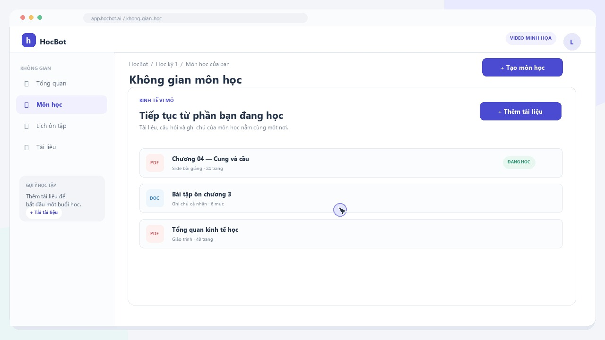

01 KHÔNG GIAN MÔN HỌC
Giữ tài liệu và tiến độ của từng môn trong cùng một nơi.
Tạo không gian riêng cho mỗi môn để tập hợp giáo trình, ghi chú và những nội dung cần xem lại. Khi quay lại, bạn có thể tiếp tục từ tài liệu đang học thay vì tìm lại từ đầu.
Cách sử dụng
- Tạo hoặc chọn một môn học.
- Thêm tài liệu, slide và ghi chú vào môn đó.
- Mở lại tài liệu gần đây để tiếp tục học.
Bạn có thể làm gì?
- Sắp xếp tài liệu theo môn và chương.
- Theo dõi nội dung đã dùng gần đây.
- Giữ câu hỏi và phần cần ôn trong đúng ngữ cảnh.
